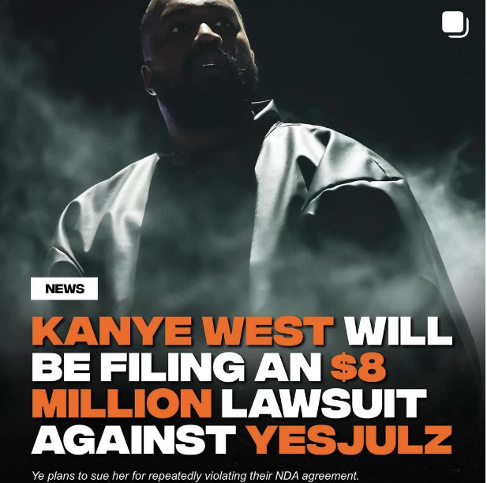

Latest News

Kanye West SUES Yesjulz
The lawsuit news comes on the heels of Ye revealing he'd fired YesJulz last week. Julz has worked closely with Ye for his Vultures 1 album rollout. However, issues reportedly arose when she began reaching out to Ye fan pages about working with her in developing a "Yeezy Universe" app for free. She later conceded her ideas had not been approved by Ye, but said he, "sees and hears everything. He knows how active you've been. I know sometimes it might feel like you might be working all day, every day, and you're work is not being seen or recognized."